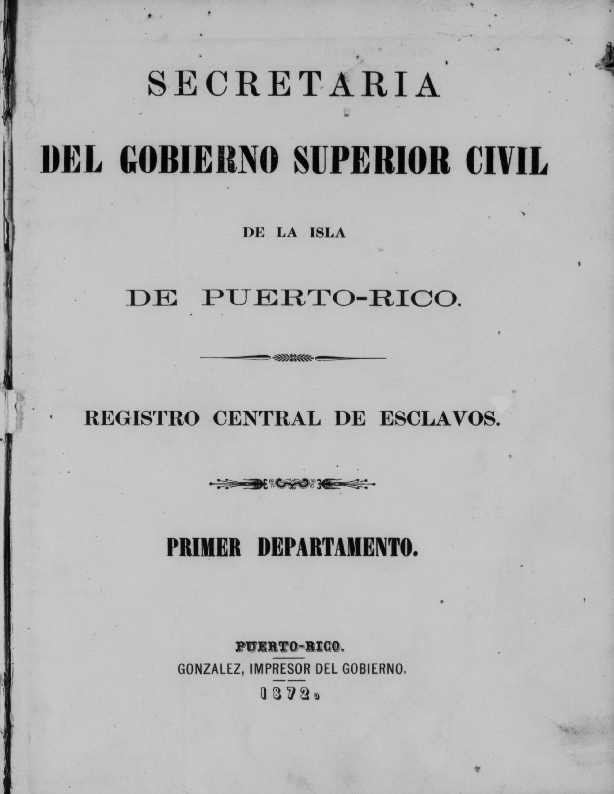
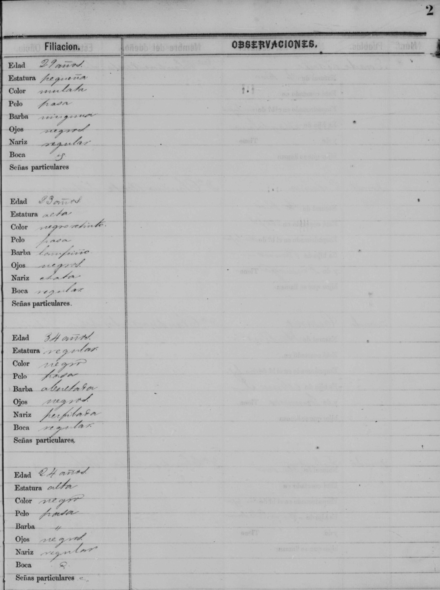
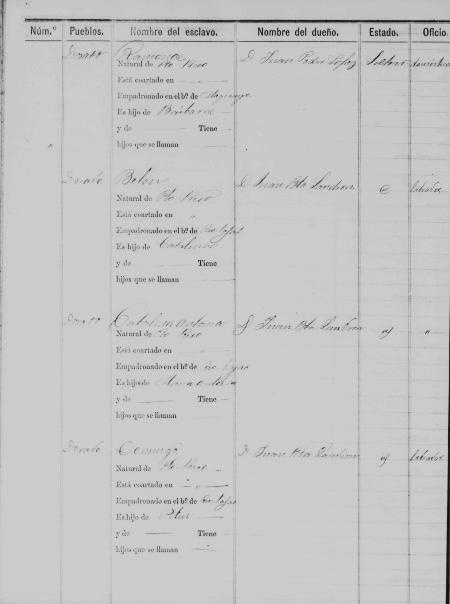
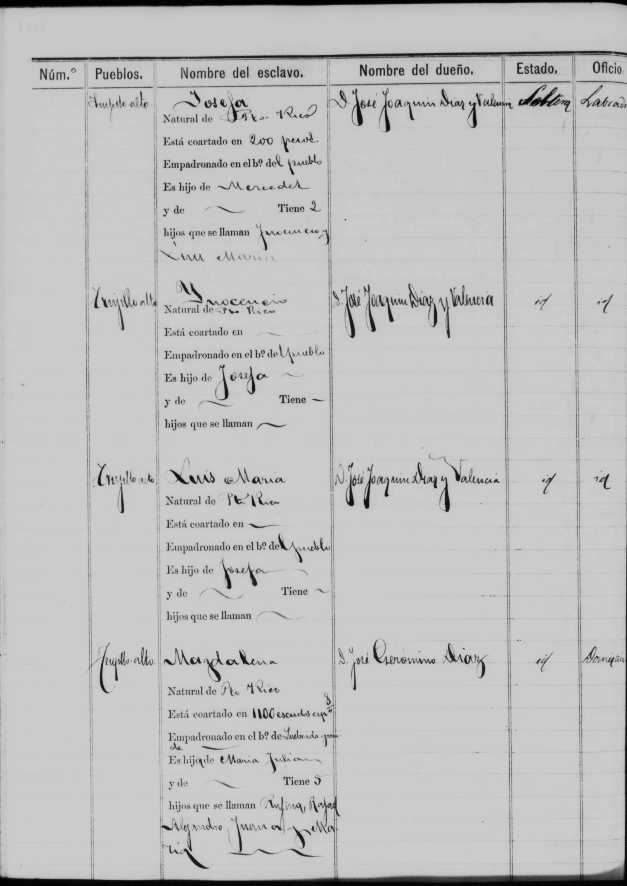
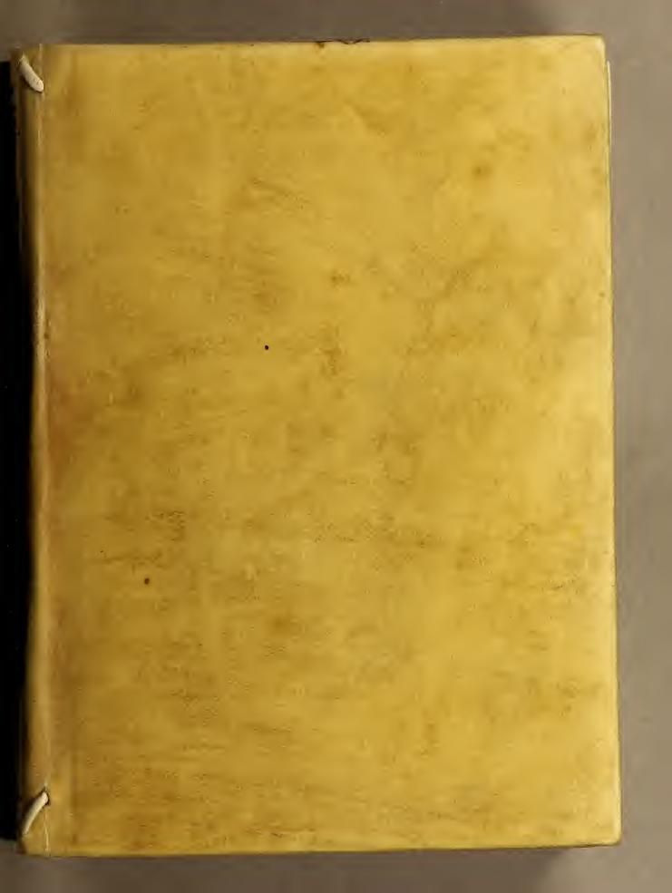
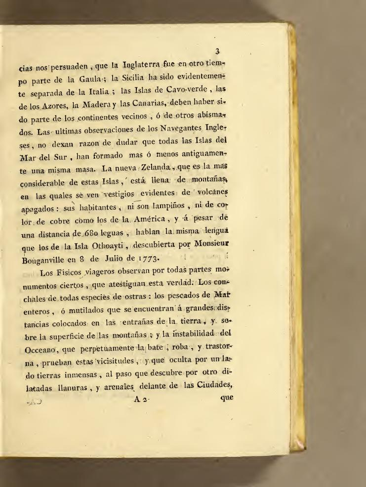
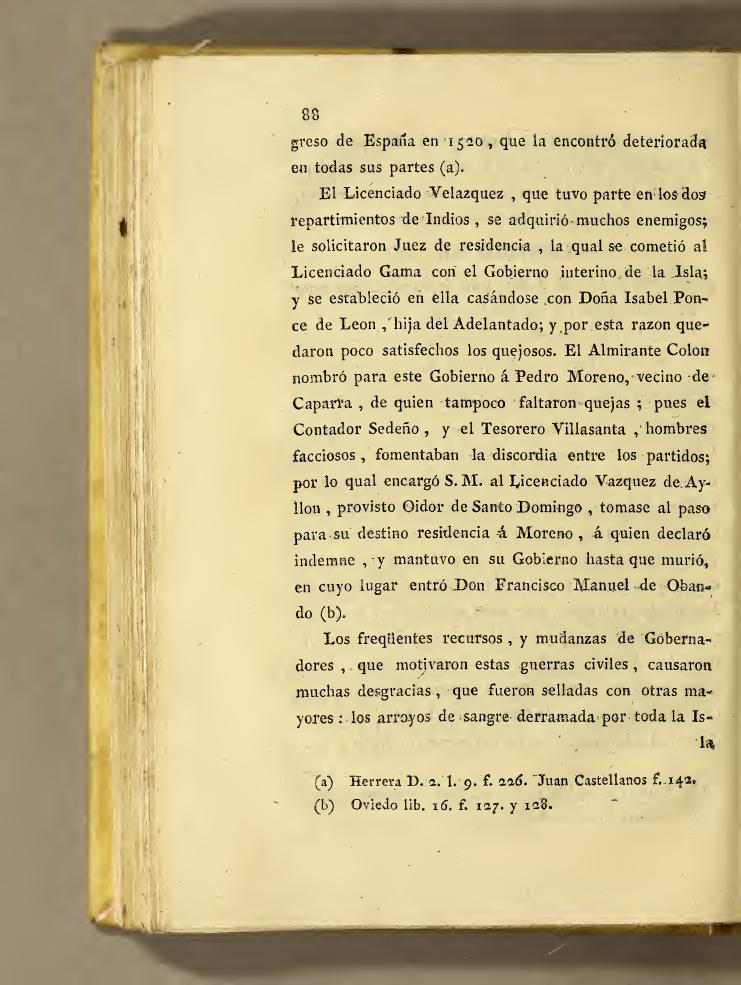
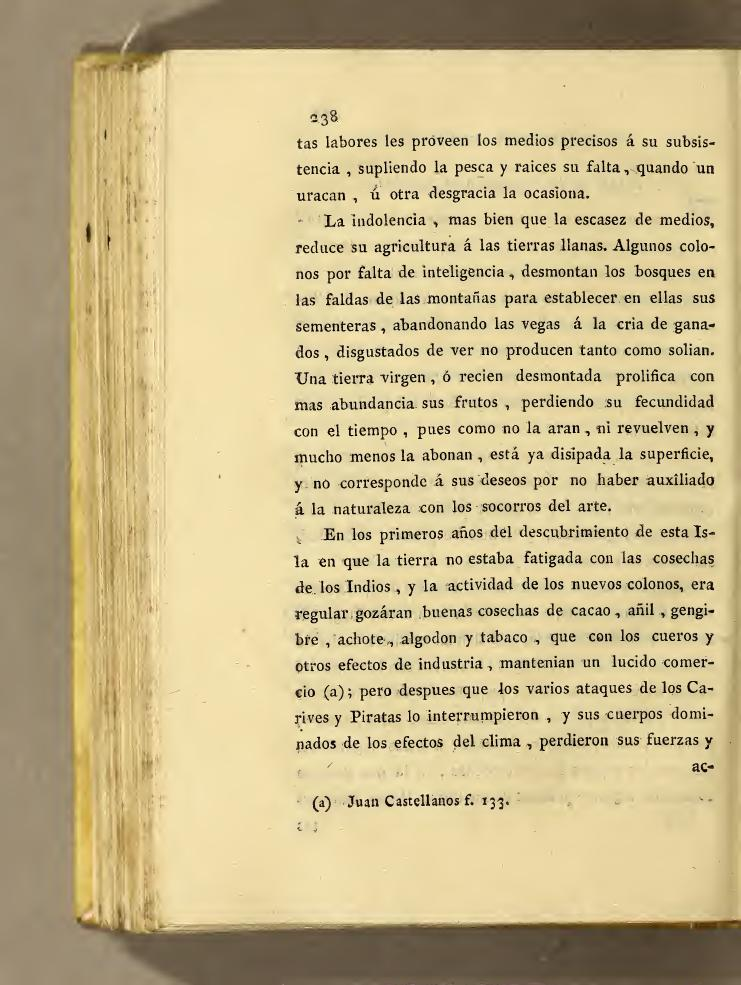
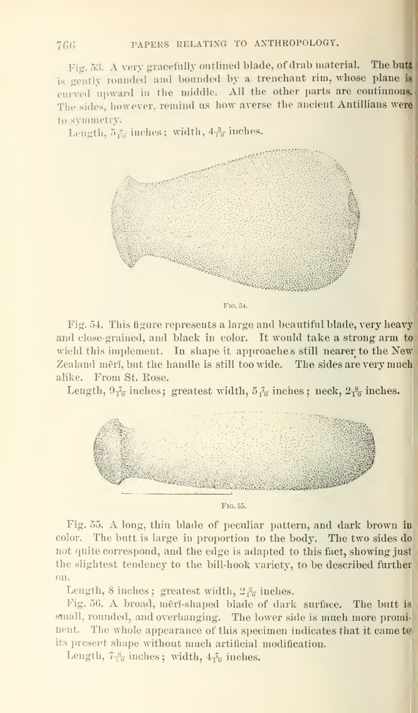
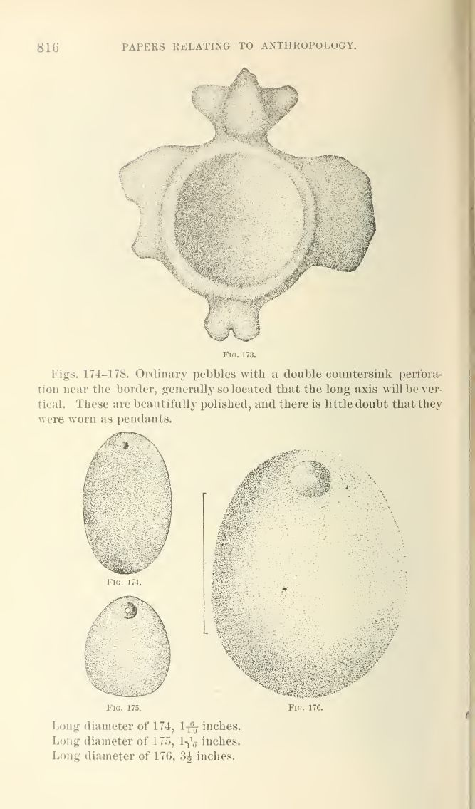

The image archive
Real document scans, not summaries — the actual pages behind the facts on this site. This grows over time as more records are pulled and added.
Registro Central de Esclavos
Spain's own colonial slave registry, District 1, Puerto Rico, 1872 — the full 715-page record is archived off-site; these are real sample pages from it. Each entry records a real enslaved person by name: their owner, town, a Spanish colonial racial classification, age, parentage, and their own children's names. Full context on The Colonial Record.




Page through the full registry
Every page of District 1, in order. This is the actual record, not a sample — individual entries for real enslaved people, one year before abolition. Enter a page number or use the arrows.
Abad y Lasierra's History of Puerto Rico
Fray Íñigo Abad y Lasierra's Historia geográfica, civil y política de la isla de S. Juan Bautista de Puerto Rico — written by a bishop who actually lived on the island, covering population, the slave economy, and colonial life in detail nearly a century before the 1872 registry above. The full 420-page book is archived off-site; these are real sample pages from it.




The Latimer Collection
The Latimer Collection of Antiquities from Porto Rico in the National Museum — a Smithsonian catalog of real Taíno objects excavated on the island, published in 1899. Full 178-page catalog archived off-site.


What else belongs here
This page is meant to grow: draft cards for the family members documented on The Colonial Record's "Those who served" section, the Taíno baptism record already in the book, census pages, and any other primary-source scan worth seeing in the original rather than just described in text.
The Family Album
Real family photographs — not records, the people themselves. Shared and identified by Omar in July 2026, digitally cleaned and color-recovered from the faded originals. The untouched originals are preserved in the family archive on our own servers.